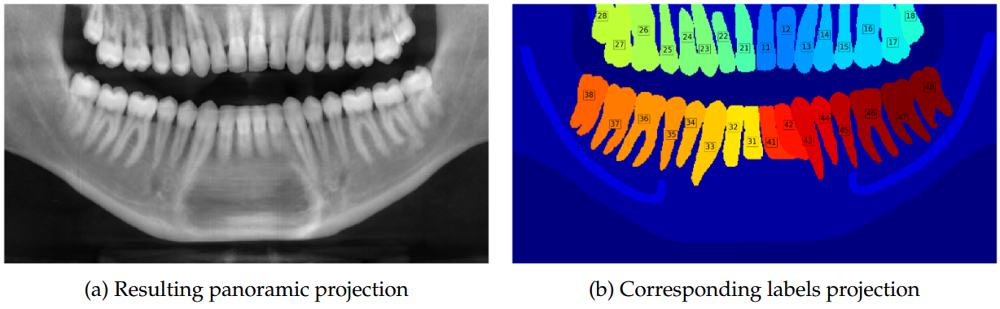
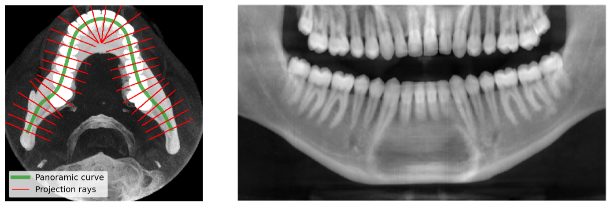
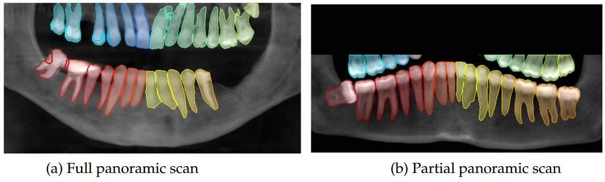
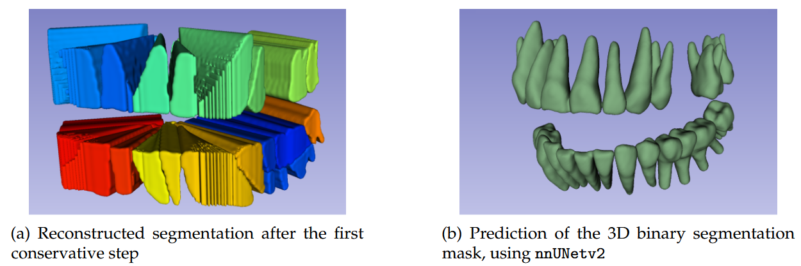

Ce projet a été réalisé dans le cadre de notre MDS à CentraleSupélec, en collaboration avec CVN et WeDiagnostix.
Il vise à segmenter automatiquement les dents à partir d'examens CBCT 3D, en combinant l'efficacité des projections panoramiques 2D et la précision des reconstructions 3D.
1. Détection de la mâchoire & projection panoramique


Nous avons détecté la courbe d'arcade dentaire (panoramic curve) à partir des Maximum Intensity Projections (MIPs) et d'un seuillage d'intensité.
Cette courbe représente l'arcade dentaire dans le volume 3D CBCT.
Pour obtenir la vue panoramique, nous avons défini pour chaque point de la courbe un plan orthogonal au vecteur tangentiel local.
Ensuite, pour chaque plan, nous avons projeté les intensités des voxels du volume 3D en utilisant une agrégation par rayon ("ray aggregation") le long des normales à la courbe.
Cette méthode permet de transformer la géométrie complexe de la mâchoire en une vue 2D simple, facilitant la segmentation.
2. Segmentation 2D des dents
Entrainement d'un U-Net 2D léger sur des panoramiques synthétiques pour prédire les dents en 2D, avec data augmentation poussée (masking, flipping, suppression aléatoire de dents).

3. Reprojection 3D et masque binaire
Les labels 2D sont reprojetés en 3D en utilisant la courbe panoramique initiale, puis affinés avec un modèle nnU-Net 3D binaire pour améliorer la précision globale.

Ce projet a été réalisé avec Emilien Biré et sous la supervision de Hugues Talbot et Didier Ernenwein.
Pour plus de détails, consultez le
rapport complet.